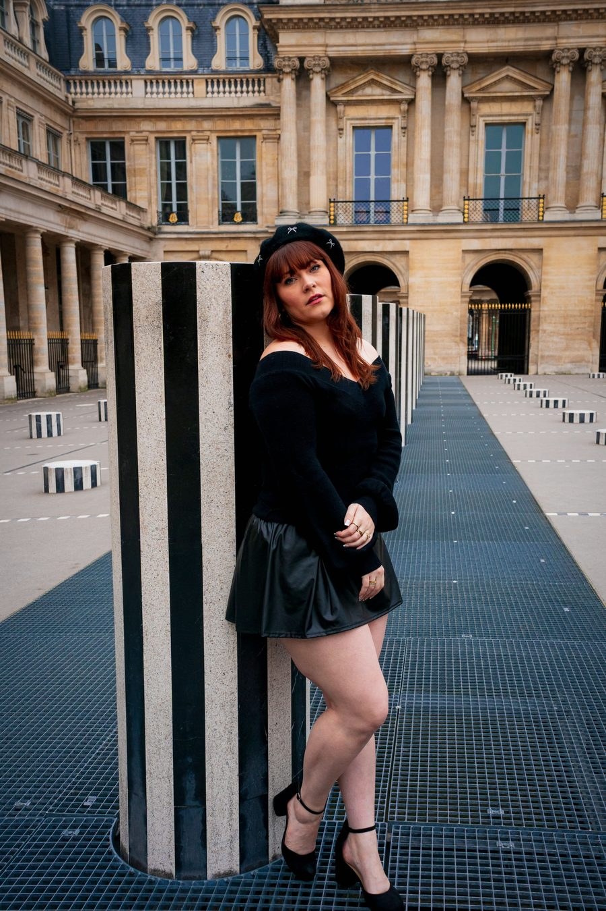
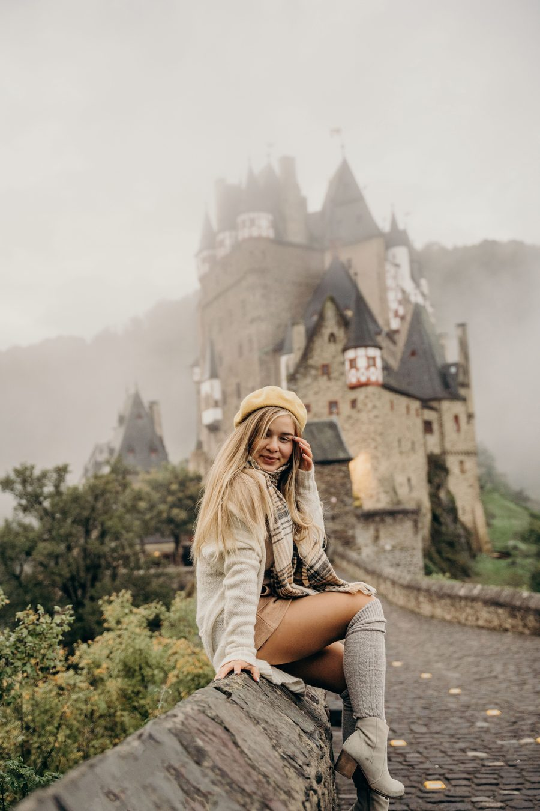

Cercanía
Escuchamos antes de proponer. Cada viaje empieza con una conversación honesta.
Nosotros
Somos una agencia de Sabaneta, Antioquia, que diseña viajes con la misma atención que le pondría a su propio viaje.


Desde 2017
Nacimos en Sabaneta con una idea simple: viajar debe sentirse personal. Desde entonces acompañamos viajeros solos, parejas, familias y grupos que quieren algo más que un paquete genérico.
Organizamos rutas por Antioquia, el Caribe, el Pacífico y el Eje Cafetero, y también viajes internacionales por América y Europa. Nos gusta decir que no vendemos destinos: diseñamos formas de habitarlos.
“Un buen viaje no se mide en kilómetros, sino en cuántas veces quieres volver.”
Equipo Tours Out Here
Lo que nos mueve
No son un manifiesto colgado en la pared: son la forma en que trabajamos cada viaje.
Escuchamos antes de proponer. Cada viaje empieza con una conversación honesta.
Decimos qué incluye, qué no y por qué. Sin letra pequeña ni sorpresas.
Nos mueve encontrar ese lugar, ese sabor o esa pausa que aún no conocías.
Verificamos proveedores, horarios y traslados para que disfrutar sea lo único pendiente.
Nuestro recorrido
Cada etapa nos enseñó algo sobre viajar: que el detalle importa, que el ritmo se respeta y que volver también es parte del viaje.
Abrimos las puertas en Sabaneta con una idea simple: viajar debe sentirse personal.
Reforzamos rutas nacionales y aprendimos a viajar cerca, con más calma y más detalle.
Sumamos Europa y Asia a las rutas, siempre con acompañamiento cercano.
Estamos construyendo una experiencia digital para que planear también sea parte del viaje.
En números
Cifras de demostración para mostrar la estructura del sitio.
Voces de viaje
★★★★★
Nos escucharon de verdad. El viaje tenía nuestro ritmo, no el de un catálogo.
★★★★★
La diferencia fue sentir que alguien estaba pendiente de los detalles que uno no alcanza a pensar.
★★★★★
Volvimos con la sensación de haber viajado sin prisa, incluso en un país tan distinto.
Testimonios ficticios. Desliza para ver más.
Hagamos equipo
Cuéntanos qué tienes en mente. Nos gusta escuchar antes de proponer.